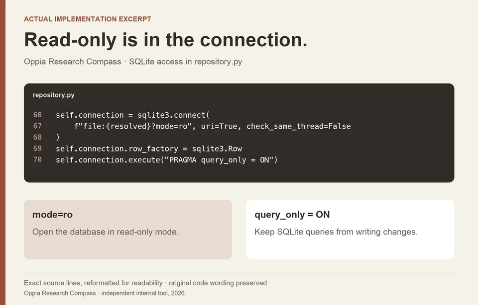

Oppia Research Compass / EVIDENCE RETRIEVAL · RESEARCH OPERATIONS
Make the answer traceable to the evidence.
I built a read-only research tool that helps an AI assistant retrieve historical evidence, keep source references, and recognize when another research question is needed.
7 min read

- The task
- Find earlier research, retrieve its exact evidence, and decide what it supports before drafting a new conclusion.
- My contribution
- Independent internal tool development: ten read-only tools, stable references, bounded retrieval, and research-framing support.
- The proof
- September 2026 internal package and original code; a new corpus-free demonstration makes the audit behavior visible.
THE CONTEXT
A useful answer has to survive the trip back to its source.
I built this edition around Oppia research because a general answer about UX methods does not tell a team what it already knows. The workflow starts with the research collection and keeps a route back to the original record and evidence.
The product context and constraints
The assistant can search a bounded set of results, retrieve a specific evidence item, compare sources, and audit the references it intends to use. The tool returns structure and source identifiers; the host assistant and researcher still decide how to interpret the material.
That distinction matters at the end of retrieval. Two valid references may come from the same record. An audit can make that concentration visible without pretending it has established that the evidence is sufficient for a product decision.
Constraints that shaped the work
- The research collection contains internal material. Public examples must explain the implementation without exposing records, participant excerpts, or private source links.
- Retrieval is bounded by result and context budgets, so a returned set is not an exhaustive review of the archive.
- Source availability and source sufficiency are different. The audit reports missing references and concentration warnings; it does not judge the validity of a research conclusion.
MY CONTRIBUTION & COLLABORATION
I independently built this internal edition. It is separate from my formal volunteer role at Oppia, and its implementation is not evidence of organization-wide adoption.
DECISION 01
Return an evidence item the researcher can retrieve again.
A search preview alone is a weak basis for a quotation. The repository returns record and evidence IDs, then supports fetching the exact evidence with its source reference and an explicit truncation flag.
What stays attached to retrieved evidence
WHERE e.evidence_id = ?
"evidence_id": row["evidence_id"],
"record_id": row["record_id"],
"content": content[:max_chars],
"content_truncated": len(content) > max_chars,| Returned information | Why the next step needs it |
|---|---|
| evidence_id | Fetch and cite the same evidence item again. |
| record_id | See when multiple excerpts come from one underlying source. |
| source_ref | Retain a source locator with the evidence. |
| content_truncated | Show when the returned text is only an excerpt. |
| Quick-mode budget | At most five search results and an 8,000-character context budget. |
No corpus contents are shown. These are deterministic retrieval behaviors, not model-generated research or an assessment of the archive’s completeness.
Alternatives and constraints
- Alternatives
- A free-form summary could hide where an observation came from. This implementation keeps retrieval and interpretation as separate steps, giving the assistant a concrete item to inspect before it summarizes.
- Constraints and tradeoffs
- Bounded full-text search keeps results manageable and the implementation inspectable. It does not guarantee that different wording will retrieve every relevant study, so the researcher may need to reformulate the query or inspect additional results.
Evidence behind this account
Actual SQL retrieves by evidence_id. Quick mode limits search to five results and an 8,000-character context budget. The repository reports whether an evidence item was truncated instead of silently treating the excerpt as the complete record.
DECISION 02
Make retrieval unable to edit the archive through this connection.
The tool’s task is to consult evidence. Opening the database read-only keeps that work separate from changing the research record.
Two inspectable connection settings
f"file:{resolved}?mode=ro", uri=True, check_same_thread=False
self.connection.execute("PRAGMA query_only = ON")- Database open mode
- Read-only
- Connection query policy
- query_only enabled
- Tool surface
- Ten read-only tools: eight for records/evidence, two for planning/audit
Selected original connection settings, separated here for readability. These controls apply to this tool’s database connection.
This explains an access boundary; it does not grant permission to distribute the internal research collection.

Alternatives and constraints
- Alternatives
- An editing tool would need a different authorization and review workflow. This edition intentionally exposes retrieval and research support, with no archive-editing operation in its ten-tool surface.
- Constraints and tradeoffs
- A researcher may still discover a source that needs correction or new material worth adding. Those changes have to happen through the archive’s separate maintenance process rather than through the retrieval tool.
Evidence behind this account
The actual connection uses SQLite mode=ro and enables PRAGMA query_only. The retained internal package report also checks the tool surface and read-only annotations.
DECISION 03
Show a missing source and a narrow source bundle differently.
A missing reference cannot be inspected. Two found references from one record can be inspected, but may still offer a narrow view. The audit represents these as different conditions instead of collapsing them into one confidence score.
Same audit function, three evidence states
"ready_for_synthesis": bool(records) and not missing,| Illustrative input | Actual returned status | What the researcher still needs to do |
|---|---|---|
| demo-evidence-1 + demo-missing | Found: demo-evidence-1. Missing: demo-missing. ready_for_synthesis: false. | Resolve the missing reference before relying on that part of the bundle. |
| demo-evidence-1 + demo-evidence-2, both from demo-record-1 | Both IDs found. One record. Single-record and single-evidence-type warnings. ready_for_synthesis: true. | Consider whether other sources or evidence forms are needed before generalizing. |
| No evidence IDs | No retrievable evidence. ready_for_synthesis: false. | Find relevant existing evidence or frame a study to address the gap. |
This is a new portfolio demonstration, not a historical participant study or the packaged release’s original fixture. The readiness field indicates reference availability, not research quality or sufficient triangulation.
View the supporting image
Alternatives and constraints
- Alternatives
- A single ready/not-ready badge would conceal the distinction. The implementation returns found IDs, missing IDs, record count, evidence types, and warnings alongside its readiness field.
- Constraints and tradeoffs
- The field named ready_for_synthesis only checks that some evidence was found and none of the requested IDs were missing. It can be true while the tool warns about a single record or evidence type. A researcher must still judge whether the bundle can support the claim.
Evidence behind this account
For this portfolio, I exercised the actual local audit function with invented IDs and metadata, without opening the research database. The results below show three concrete states returned by that function.
How the work developed
Internal version 0.4.0 package
The manifest records an internal build with ten read-only tools and retained automated integration and privacy reports.
Corpus-free implementation demonstration
The local audit function was exercised with invented IDs to show missing-reference, single-record, and empty-bundle behavior.
OUTCOME & REFLECTION
A bounded way to bring research into AI-assisted work.
The internal 0.4.0 package provides ten read-only tools, with a recorded automated integration-test report covering retrieval, tool boundaries, and reference checks. It gives the host assistant an inspectable path from a question back to the research source.
A field name can promise more than the code checks.
The audit makes useful distinctions, but ready_for_synthesis deserves clearer wording. It currently tells the assistant that references are available; it does not tell a researcher that the evidence is enough. I would separate that availability status from the judgment about coverage, then test whether researchers notice the single-source warning and change the claim or next study accordingly. The blank research-framing card already asks how different answers would change a product decision; the interface should preserve that discipline.
The next question I would test
Test a quote-verification task and an intentionally unsupported conclusion, observing source accuracy and whether the researcher acts on the evidence warnings.
Original repository implementation and September 4, 2026 internal package records. This independent project is separate from my volunteer role at Oppia. Visuals show implementation and reconstructed workflows; the research corpus remains private. Team adoption and measured productivity were not established.
KEEP EXPLORING